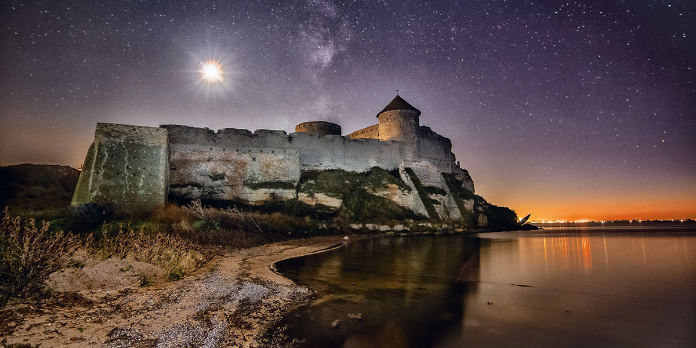
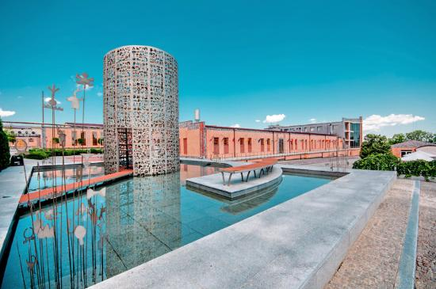

|
Найбільша за територією область України, розташована на південному заході країни. Одна з найрозвиненіших областей країни в економічному, туристичному, культурному та науковому напрямках. На півночі та сході межує (за годинниковою стрілкою) з Вінницькою, Кіровоградською та Миколаївською областями, омивається водами Чорного моря, на півдні — з Румунією, на заході — із Молдовою. До складу області входить острів Зміїний.
|  |
Аккерманська фортеця Фортеця Аккерман – це історико-архітектурний пам’ятник XIII-XV століття, що омивається водами Дністровського лиману. Фортеця одна з найбільш збережених історичних споруд України, а також є найбільшою фортецею країни. Теги: Історичні пам'ятки |
|  |
Центр культури вина “Шабо” У годині їзди від Одеси в 2009 році відкрився перший в Україні “Центр культури вина Шабо”, головною метою якого є підвищення культури споживання благородних напоїв. Центр розташований безпосередньо на місці в одному з найдавніших виноробних регіонів Європи, традиції якого були закладені ще в античні часи. Теги: Цікаві місця для відпочинку, Цікаві місця для розваг Посилання на офіційний сайт |